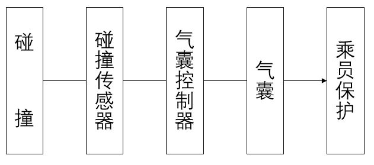

汽车安全气囊英文名是AIRBAG，汽车安全气囊是辅助安全系统(SupplementalRestraintSystem)，简称SRS。
安全气囊系统包括碰撞传感器、气囊控制器和各种安全气囊（包括主驾驶安全气囊、副驾驶安全气囊、主副驾座椅侧气囊、左右侧气帘）。
在发生碰撞时，传感器将碰撞信号发送给气囊控制器，气囊控制器能够根据碰撞的程度判断是否达到安全气囊起爆的最低要求，然后发出点火指令，引爆安全气囊，迅速在乘员和车内结构件（如方向盘、仪表板、内饰板等）之间形成一个充满气体的柔软气袋，通过气袋的排气阻尼作用缓和冲击并吸收碰撞能量，达到减轻乘员伤害程度的目的。

只有在使用安全带的条件下，SRS安全气囊系统才能充分发挥保护乘员的作用。
在每次碰撞之后都应检查安全气囊系统。碰撞之后的安全气囊和气囊控制器不能再使用，必须更换！新的安全气囊系统必需经过专业技师的检查以确认无缺陷并能正常运作。
严禁在前排放置向后的儿童座椅，后排是儿童的安全位置。
禁止在装配有安全气囊的区域内放置或粘贴任何物品，以免在安全气囊起爆时造成意外伤害。
安全带是保护乘员的主要途径，车辆前排座椅和后排座椅都有安全带。前排和后排座椅都采用三点对角线包围式安全带。
前排安全带锁扣装在各自座椅的座椅滑轨上。后排座椅安全带锁扣则固定在地板上。
前后排安全带都具备紧急锁止功能。锁紧功能在安全带从卷收器中快速拉出时被激活。锁紧功能可防止安全带拉出的幅度超过允许的卷收位置。
前排安全带具有未系提醒功能，通过视觉和听觉信息提醒用户时刻佩戴安全带。